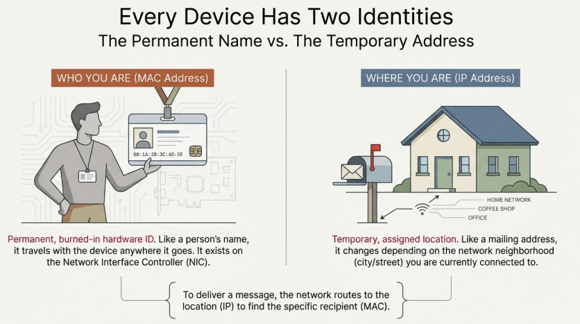
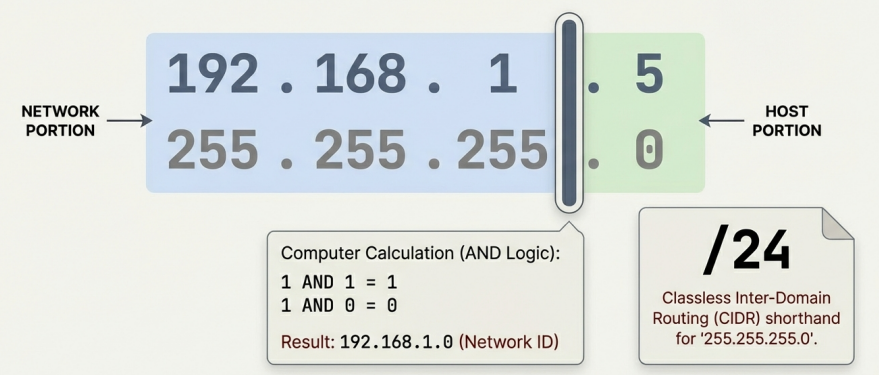

Analyzing TCP/IP
Instructor: Chris Fulton
Learning Objectives
- Analyze different types of networks addresses
- Describe the difference between physical and logical addresses
- Exam the two parts of the media access control (MAC) address
- Discuss the components of IPv4
- Binary/Decimal Conversion and Subnet Mask
- Discuss the components of IPv6
- Evaluate IPv6 format
- IPv6 advantages and differences vs IPv4
- Explore that evolution of Networking Protocols
- Discuss proprietary and standard protocols
- IP, TCP, UDP, and TCP/IP
- Switches and Routers
- Network Transmission and Traffic
- Switch Configuration and Management
- VLANs design and configuration
Network Addresses
Key Network Terminology
Logical/Physical Address
MAC Address
IP Address
IPv4
IPv6
Subnet Mask
Network Address Translation
Classful addressing
Static/Dynamic IP Address
Public/Privae IP Address
loopback/localhost address
Organizationally unique identifier (OUI)
Device ID
MAC table
Gateway
Networks
- Physical addresses → Who are you on this local network?
- Logical addresses → Where are you on the global network (the internet)?
What are the distinct purposes of each address?
Take a look at the MAC address on your modem. Search this site to who is the manufacturers.
Activity - Let me Guess!!

Think of a number between 1 - 60
Do not share this number with the instructor. The instructor will magically guess your number
How did I guess the number?

Conversion to Binary Activity
Convert the IPv4 Address and MAC Address to binary
IPv4 Address: 192.168.12.1
MAC Address: 00:1B:63:3C:4D:5E


The Subnet Mask Defines the Boundaries
Distinguishing the Network from the Host
